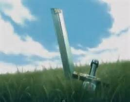

|
|
|
第十五章 フェイレフィース
太陽の光があふれ、目がくらむような草原に、二人の騎士が対峙していた。
二人の騎士はともに剛勇の騎士であり、
互いに目を合わせた瞬間に、
戦わなければならない運命を感じていた。
一人は赤い甲冑をつけ、赤い楯をもっていた。
もう一人は豪華絢爛な甲冑をつけ、
数百の宝石がちりばめられた楯をもっていた。
二人は近づくと、目を輝かせた。
すぐさま馬の向きを変え、
一騎討ちの態勢にはいった。
二人は手綱を引き締め、拍車をかけ、
相手に向かって走りだした。
赤い騎士はパルシファルであり、
豪華絢爛な騎士は異教徒だった。
二人は鞍の上に、しっかりとまたがり激突した。
槍の破片が激しく飛びちった。
異教の勇士は、相手が鞍の上に留まっているのを見て激怒した。
これまでに戦った相手の中に、鞍の上に留まる者はいなかったのだ。
この異教の勇士と相対すれば、
誰であろうと槍の一撃で、馬上から落とされたのである。
異教の勇士は、それほどに強靭な騎士だった。
しかし相手の赤い騎士も、並はずれて優れた騎士であった。
これまでに戦ったどの騎士とも、比べものにならないほどに剛毅であった。
二人はともに、決して劣勢に陥ったことのない、負けを知らない騎士だった。
しかるに、この戦いは、突出した強さをもった怪物同士の
今後、二度と見ることのできないであろう、極めてまれな一騎討ちだった。
二人は、かつてないほどに激しく厳しい戦いになることを予感した。
二人は鋭い剣をすばやくつかんで相手に襲いかかった。
激しく飛びまわり、何度も場所をかえて戦った。
二頭の馬は興奮していた。
二人はついに馬から飛びおりた。
打ちおろす剣のものすごい音が鳴りひびいた。
異教の勇士は、愛と栄誉のために戦っていた。
武魂を鼓舞し、闘魂を燃え上がらせるために、
妻ゼクンディルレの名を叫んだ。
妻ゼクンディルレの魂は、異教の勇士の楯となり
相手の攻撃を防いだ。
妻の愛に勇気づけられて、
今や異教の勇士に戦闘力がみなぎり、相手を圧倒した。
ここで戦っているのは、誠実な魂同士だ。
正々堂々と神の裁きに身をゆだね、
全力で己の力を試そうとしている。
二人は、まれに見る真摯な精神をもつ騎士だった。
パルシファルはこれまでにない苦境に立たされていた。
異教の勇士は、パルシファルを苦しめた。
パルシファルは、異教の勇士の一撃に耐えられずに
次第に、防戦一方になった。
異教の勇士は魂を震わせながら
妻の魂を剣に乗せて、
高いところから何度も激しく打ちおろしたので、
パルシファルはついに、ひざをついてしまった。
パルシファルは、妻コンドヴィーラームールス力を借りようとした。
そして空に向かってコンドヴィーラームールスの名を叫んだ。
するとコンドヴィーラームールスの愛が時空を超えて
パルシファルの魂に届いた。
パルシファルは妻コンドヴィーラームールスの愛を感じ
己の魂を震わせて、立ちあがった。
そして渾身の思いをこめて、異教の勇士に、強烈な一撃を加えた。
異教の勇士の楯は砕けて宝石が飛びちった。
パルシファルの次の一撃は、異教の勇士の兜に、命中した。
異教の勇士は、ついに、ひざまずいてしまった。
ところが、パルシファルの剣は、
あのイテールから奪った頑丈な剣は、真二つに折れてしまった。
パルシファルの手に残っているのは、剣の柄とつばだけだった。
剣の先は、無残にも、少し離れた草の上に落ちていた。
パルシファルは敗北を覚悟した。
騎士になって以来、初めての敗北だ。
パルシファルは死ぬかもしれないと思った。
これで終わりだと。
パルシファルの心に、屈辱や悔悟はいっさいなかった。
むしろさわやかで、冷たい風が吹いていた。
異教の勇士は、すばやく立ちあがった。
戦いはまだ終わっていなかったのだ。
異教の勇士は、剣を片手に相手の赤い騎士に近づいた。
そして、静かに呼吸を整えて、豊かな心を見せて言った。
「勇敢な騎士殿。我々はもう戦うことはできない。
剣を失った者と戦いつづけて、何の名誉が得られようか。
もしもお前の剣が折れていなかったら、
お前は私を倒し、偉大な栄誉を手にしていたことだろう。
さあ、休戦しよう。そして名をなのってくれ。」
パルシファルは答えた。
「脅して、名をなのらせようというのなら、それには応じられない。」
フェイレフィースは誠実な態度で言った。
「どうか信じていただきたい。
一騎討ちの栄誉にふさわしい、お前のような強い騎士に出会ったのは初めてだ。
私が先に名をなのろう。アンショウヴェのフェイレフィースだ。」
パルシファルはアンショウヴェという地名を聞いて驚いた。
「アンショウヴェは私の国だ。
どうしてあなたがアンショウヴェの人なのだ。
しかし私の知る限り、アンショウヴェの国を名のれるものは、もう一人いる。
私の兄が、異教の地で、恐れを知らぬ勇士として知られているらしい。
あなたの顔を見れば、あなたが兄かどうかわかるかもしれない。
兜をとっていただきたい。
欺くようなことはしません。
兜をかぶっていない相手に戦いをしかけるようなことはしません。」
異教の勇士フェイレフィースは言った。
「お前は剣をもっていないのだから、そんな心配をする必要はない。
戦いの条件は対等でなければならないのだから。
お前に兄がいるというのなら、お前の兄の顔と肌はどのようだか言ってみるがよい。」
パルシファルは答えた。
「カササギのように、白と黒が入り混じっているようです。そう聞いています。」
「それは私だ。」
二人はためらわずに、さっと兜をはずした。
パルシファルはそこにカササギのような肌をした兄の顔を見た。
喜びで胸がいっぱいになった。
パルシファルは名をなのり、
二人は敵意を捨てて、抱擁した。
誠実と愛が二人の一騎討ちを分けたのだ。
二人は草の上に腰をおろした。
フェイレフィースは感激に震えて言った。
「全能の神、ゼウスよ。
美の女神ヴィーナスよ。
高貴なガムレットのもう一人の子
私の唯一人の弟に出会えたことに感謝する。
私をこれほどまでに苦しめた勇敢な弟に出会えたことを誇りに思う。」
パルシファルも感動して言った。
「私も兄上に会えて、とてもうれしい。
我が神に感謝します。
あなたほどの方に出会えたこと、
これほどまでの苦しい戦いをしたことは初めてです。
兄上の偉大な栄誉を誇りに思います。」
「弟よ。私のことを気軽に『お前』と呼んでもらいたい。」
「兄上、それはできません。
あなたは私よりも強く、しかも兄ですから。
敬意をこめて『あなた』と呼ばせていただきます。」
「そうか。
お前に、私の国ツツァマンクを譲ろう。
父ガムレットが所有していた国だ。
父は並はずれて立派な騎士だったと聞いている。
母は私を産んで間もなく亡くなったらしい。
私は孤児だ。
私を孤児にした父を憎む気持ちもあるが、
それ以上に、父に会いたい気持ちが強い。
立派な父に早くお目にかかりたい。
今こうして旅をしているのも、父に会いたいからなのだ。」
パルシファルは兄の気持ちを考えながら言った。
「兄上。
私も父にお目にかかったことはありません。
父は実に誠実で立派で、
戦いのたびに、名声を得ていたと聞いています。
しかし、あるとき、バルクを助けに戦いにおもむき、
バルダク城外で栄光の生涯を閉じました。
私たち二人は、その時、父を失ったのです。」
フェイレフィースは驚いた。
「なんということだ。父はいないのか。
父上は亡くなられたのか。
それはあまりにも悲しいことだが、
事実をお前の口から聞くことができてうれしい。
父と私とお前は、ひとつのものだ。
ガムレットとフェイレフィースとパルシファルは別々ではない。
一心同体だ。
だから、お前は自分自身と戦ったのだ。
私も私自身と戦い、自分を打ち殺そうとしたのだ。
お前は私の命を私の攻撃からから守ってくれたことになる。
これは奇跡だ。
神の力が、そしてお前の力が私の命を守ってくれたのだ。」
フェイレフィースは感極まって涙を流した。
二人は立ち上がり、出会いを確かめるように、何度も抱擁し、肩をたたいた。
パルシファルは言った。
「この近くにアーサー王が宿営しています。
美しい婦人もたくさんいます。
そこへ行きましょう。」
フェイレフィースは喜んで言った。
「そこへ一緒に連れていってくれ。
アーサー王や一族の方々にお会いしたい。」
二人はアーサー王を訪ねた。
ガヴァーンが出てきて二人を出迎えた。
ガヴァーンは礼儀正しく二人にあいさつし、
家来に命令して二人の甲冑をはずすように言った。
フェイレフィースが甲冑をはずすと白黒の肌があらわになった。
ガヴァーンは驚いて言った。
「パルシファルよ。お連れの方を紹介していただきたい。」
パルシファルはガヴァーンにフェイレフィースを紹介した。
「私の父ガムレットがツツァマンクの女王ベラカーネを訪ねたときに、生まれた方だ。
今はツツァマンクの王だ。
そして、私の兄だ。」
ガヴァーンはフェイレフィースが親戚であることを知り、
ていねいに挨拶をし、
居並ぶ婦人方に、フェイレフィースを紹介して歩いた。
フェイレフィースは婦人方から歓迎を受け、ご満悦だった。
親切な親族に出会えて、フェイレフィースの心は暖まった。
ガヴァーンはパルシファルに言った。
「魔法の城の望楼の柱から、お前の一騎討ちを見ていたぞ。
あのような激しく見事な戦いは見たことがない。
おそらく、この先も見ることがないだろう。
お前の兜と楯を見ると、戦いの激しさがどれほどのものだったのかが、よくわかる。
相手は誰だったのだ。」
パルシファルは答えた。
「兄上だ。
あの時は、まだお互いに相手が誰なのかを知らなかった。
お互いがお互いの命を救ったのだ。
兄上は奇跡だと言っていた。」
ガヴァーンは運命の不思議なめぐり合わせに感心した。
アーサー王がやってきてフェイレフィースに挨拶をした。
グラモフランツや円卓の騎士たち、さらに多くの婦人らもやってきた。
アーサー王はフェイレフィースとならんですわり、話しはじめた。
「ここであなたに会うことができて大変うれしい。
そのことを神に感謝したい。
異教の騎士に対して、これほど親切な気持ちになったことはない。」
フェイレフィースはこの言葉を聞いて言った。
「アーサー王よ。あなたの栄誉は世界にあまねく知れわたっています。
お会いできて光栄です。」
アーサー王は応えた。
「私をほめるとは礼儀正しいお方だ。
あなたがどうしてここに来たのか。
今までにどんな戦いの誉れを得たのか。おうかがいしたい。」
フェイレフィースは、故郷のことや妻のこと、
そしてこれまでに戦って栄誉を得た騎士の名前をたくさんあげた。
その数は五十を超えていた。
アーサー王は、オルゲルーゼのことやクリンショルのことを話した。
そして、パルシファルにも戦いの栄誉を語るように求め、
パルシファルも五十を超える騎士の名前をあげた。
フェイレフィースはパルシファルの戦いの栄誉の数を聞き、
感嘆し、弟を誇りに思った。
アーサー王、グラモフランツ、パルシファル、ガヴァーンは四人で相談し、
フェイレフィースを円卓の騎士に招聘することを取り決めた。
アーサー王はフェイレフィースに円卓の騎士になることを要請すると、
フェイレフィースは快く受諾し、円卓に着くことを約束した。
翌日、豪華な絹地の布が裁断され、
大きな布の円卓が用意された。
名だたる騎士と美しい婦人が列席し、宴が始まった。
フェイレフィースが円卓の騎士となった記念すべき宴だ。
宴が半ばにさしかかった時、
一人の女性がやってきた。
クンドリーエだ。
クンドリーエの顔はヴェールで覆われていた。
豪華な服の上に、フードのついたビロードのマントをはおり、
マントには、きじ鳩の刺繍がほどこされていた。
きじ鳩は聖杯の紋章だ。
クンドリーエはアーサー王のところに行き、挨拶をした。
「わたくしめが以前に皆さんの前で振舞った態度は、
罰せられるべきものですが、
どうか寛大な心でお許しくださいませ。」
アーサー王はクンドリーエを許した。
すると、クンドリーエは頭巾とヴェールをとって、パルシファルのところへ行った。
クンドリーエは以前と変わらず醜い姿をさらした。
毛むくじゃらの顔に黄色い牙がはえていた。
クンドリーエは泣き出して、パルシファルに言った。
「どうかわたくしめを許してください。
親愛のあいさつはいただけなくても結構ですから、
以前のわたくしめの振る舞いをお許しください。
償いはいたします。」
パルシファルはうなずいてクンドリーエを許した。
クンドリーエは続けた。
「ガムレットとヘルツェロイデのご子息よ。
神があなたに恩寵を示されようとしています。
お喜びください。
気高きものが訪れました。
あなたは、人間に許される最高の幸せを得られました。
聖杯に文字が現れたのです。
あなたを聖杯の主とせよ、と。
王妃コンドヴィーラームールス様とご子息ローエングリン様ともども、
聖杯城に招かれています。
あなたがペルラペイレを去ったとき、
王妃はあなたの子どもを二人身ごもっていました。
もう一人のご子息カルディス様は
ペルラペイレで莫大な財産を譲り受けることになっています。
あなたは、あのアンフォルタス様にお会いするのですから、
今度こそあなたの問いがアンフォルタス様の病を癒し
聖杯城の人々の苦悩を取り除くのです。
あなたほどの幸せ者がどこにいるでしょうか。
土星と木星と火星と太陽が、あなたの幸福を告げています。
これらの星が照らすものすべてを手に入れることができるようになります。
あなたの苦しみは終わります。
ただし、節度を超えた欲をもてば、聖杯のもとを追われます。
あなたは悲しみと苦しみに耐え、
今、喜びを迎え、魂の安らぎを勝ちとられたのです。」
パルシファルはクンドリーエの知らせを聞いて喜んだ。
喜びのあまり、目から涙が落ちた。
「クンドリーエ。
神の恵みを知らせてくれてありがとう。
あなたは私に償いたいと言われた。
あなたの誠意は受けとるが、
償いの必要はない。
私が過ちを犯さなければ、あなたは腹を立てることはなかったのだから。
それに、あの時、私はまだ未熟で、救われるべき時ではなかったのだ。
まだ早すぎた。
しかし、今こうしてお告げを聞いて、私の苦しみは、ようやく終わった。
あなたの服についているきじ鳩の紋章が、真実を物語っていると思う。
クンドリーエ。
私はいつどのように旅立てばよいのか。」
クンドリーエは答えた。
「この旅には、同伴者が一人必要です。
ご自分で旅の同伴者を一人選んでお連れしてください。
案内は、わたくしめがいたします。
アンフォルタス様をお救いになるために、
できるだけ早くでかけましょう。」
パルシファルはさっそくフェイレフィースに聖杯城への同行を頼んだ。
フェイレフィースは同行を約束した。
フェイレフィースは自分がここを去ることになったので、
ここにいるすべての人に高価な贈り物をしようと思いたった。
フェイレフィースは言った。
「グラモフランツ王とイトニエーの愛が本物であるならば、
どうか頼まれてほしい。
私はここにいられる王や騎士や全ての人々に、
高価な贈り物をしたいのだ。
すべての人に贈り物が行きわたるように、
もらい損ねる人がいないように見届けていただきたいのだ。
港へ使者を送って、。荷物を運ばせるようにします。
四日以内には、船から荷物が届くでしょう。」
アーサー王らは、この地に四日間は滞在すると約束した。
オルゲルーゼはパルシファルの問いが、
アンフォルタスの苦痛を終わらせることになるだろうと聞いて、
喜び、涙を流した。
いよいよ出発の時が来た。
クンドリーエの案内で
パルシファルとフェイレフィースは聖杯城に向かって出発した。
多くの婦人が別れを惜しんだ。
四日後に、異教徒の軍勢から莫大な荷物が届いた。
人々は皆でそれを分け、
豪華な品々を受けとった。

|
|
|